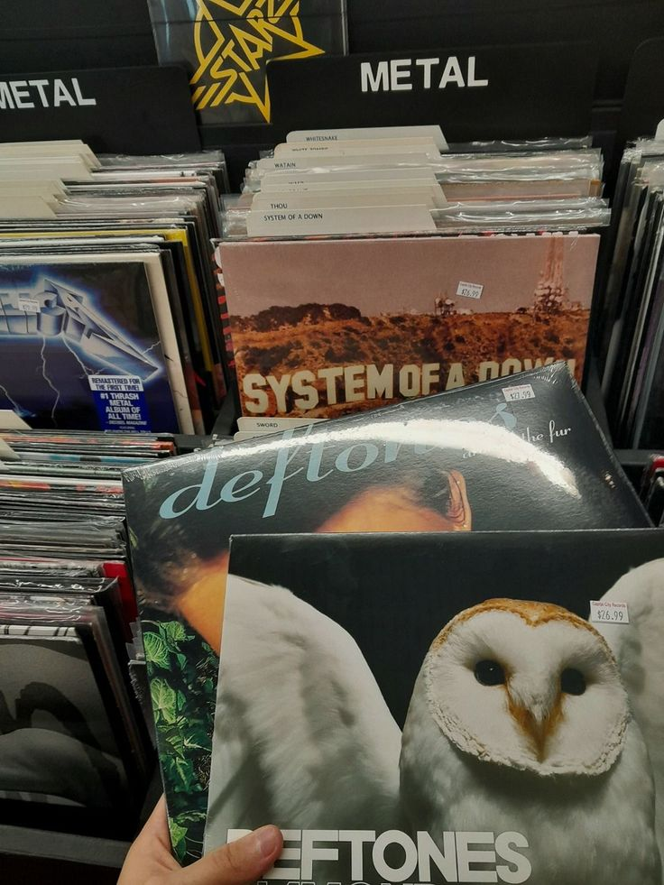

Adrenaline (Featured)
Deftones · 1995
Album debut legendaris Nu Metal yang sangat berpengaruh.
Nu Metal
Tidak ada album yang cocok dengan filter ini.
Memuat data...
| Judul Album | Penyanyi/Band | Tahun Rilis | Genre |
|---|
Deftones · 1995
Album debut legendaris Nu Metal yang sangat berpengaruh.
Linkin Park · 2012
Limp Bizkit · 1999
Vanessa Carlton · 2004
